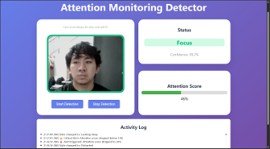
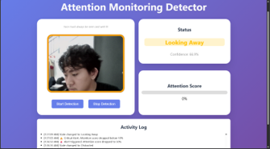
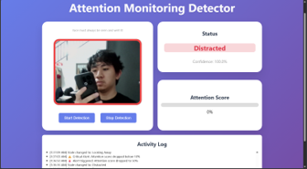

Machine Learning & Web Application
Attention Monitoring Detector
An interactive web platform utilizing real-time computer vision to monitor user engagement levels and head gaze direction.



Project Overview
The Attention Monitoring Detector addresses the challenge of maintaining focus during remote learning and working sessions. Leveraging webcam-based video streams, the app processes facial coordinates client-side to detect gaze shifts and head rotations. It will then classify attention states (e.g., focused, distracted) and visualize them in an interactive dashboard, calculating an active "attention score" dynamically.
Key Features
Webcam Head Tracking
Real-time, no external hardware
Interactive Dashboard
Session-wide attention distributions
Privacy-First Processing
All video processed locally in-browser
ML Technologies
Computer Vision Pipelines
CNN Classification Model
WebAssembly Acceleration